Creating a New Scenario
In the following sections, we will go through a step-by-step process of setting up a simple scenario with all the various types of units added inand the game setting adjusted.
We will also add a battle plan for each side, but that information can be found in FM05: Battle Planning. You will need to open that document when the time comes to see all the functionality of the Battle Planning process.
Map and Weather Parameters
After clicking the "Next" button, the initial window that appears is the Map and Weather Parameters page. This page allows users to select both the map and the potential weather conditions for the scenario. The Map and Weather Parameters window is seen in Figure 4.
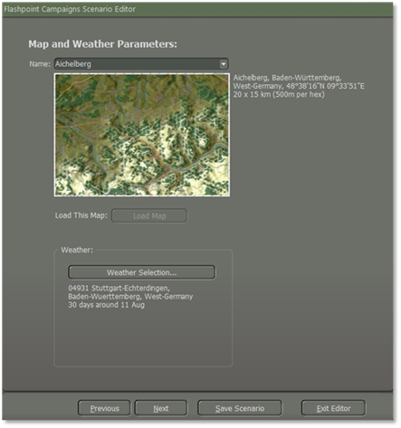
Figure 4
Selecting a Map
Choose a map by clicking on the (1) “Name” dropdown menu as seen in Figure 4, which will display a list of all available maps in the selected game module as illustrated in Figure 5. Scroll through the list to view all the names of maps.
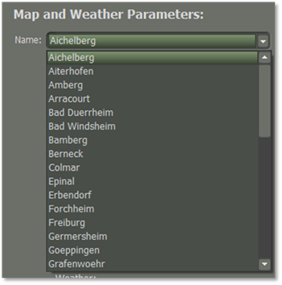
Figure 5
Upon selecting a map, a mini-map image of the area will appear, accompanied by detailed map information on the right, including the name, and size as illustrated in Figure 6.
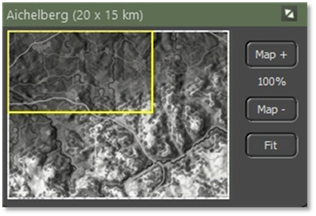
Figure 6
1. The top bar shows the name of the map and its dimensions in parentheses.
2. The yellow outline shows what part of the map is currently visible on the screen based on the level of zoom currently selected and the location on the main map.
3. This is the full Mini-Map in greyscale. Clicking anywhere on the map will recenter the visible map on the game screen.
4. The “Map +” and the “Map –” buttons will increase or reduce the map size. Below the “Map +” button is a scale of the map when you adjust the size.
5. The “Fit” button will make the map fit the full screen.
Once you find a suitable map, click on the (2) “Load This Map” button to load the selected map into the editor as seen in Figure 4.
Setting up Scenario Weather
One of the important aspects of scenario creation is establishing what the weather will be during the battle.
The Weather Selection editor allows you to set up a range of possible historical weather patterns or you can tailor the weather to meet your needs. This information is then used to dynamically generate the weather for the scenario and is used to provide the weather forecast seen in the game so players can get an idea of how the weather will impact the fight.
Click the (3) “Weather Selection” button to open the “Select Weather” dialog as seen in Figure 4. The noted area in the dialog is described below.
In the User Preferences dialog, you may switch between Metric and Imperial units for the weather information.
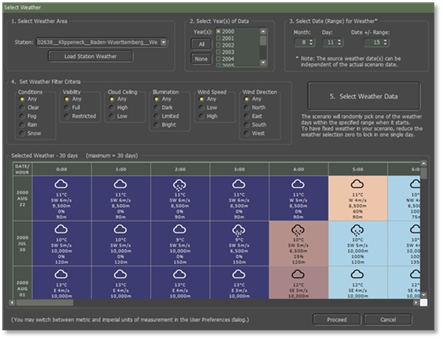
Figure 7
1. Select Weather Area – In this section of the weather settings, you can set the location for the weather information as illustrated in Figure 8. By default, the weather data for the map loaded will be set here. You can use another area or custom map data if you have created any.
See FM10: Weather Setup for details on making your weather setup files.
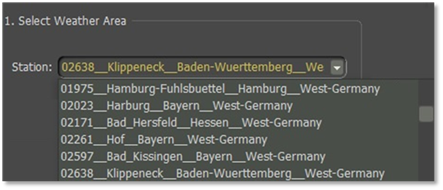
Figure 8
It would help if you highlighted the weather station and then select the “Load Station Weather” button.
2. Select Year(s) of Data – Based on the weather data file loaded, several years can be selected to increase the number of weather days in the date range and filter criteria. You can add all the years by selecting the “All” button which will highlight them all or you can use the “None” button which will deselect all the years. You can select each year you want by selecting the years individually.
3. Select Data (Range) for Weather – By default, this date matches the date set for the scenario. You can change the date and adjust the ± number of days around that date to select weather from.
4. Set Weather Filter Criteria – You can set any, all, or none of these items to filter the weather for the date to more of the conditions you want for the scenario.
5. Select Weather Data – Once you have set all the parameters you want, click the “Select Weather Data” button to fill the Selected Weather Information table and see the results of your selections. If no selections are shown, you may need to change some of the filters, add more years, or increase the date range.
6. Selected Weather Information – This shows you the weather for the selected days up to a max of 30 possible weather patterns that may be used in the scenario.
The more options shown in this table, the more possible weather patterns could appear in the game. Each cell of the table shows the Weather Type by icon, Temperature, Wind Speed and Direction, Maximum Visibility, Illumination Level, and Cloud Ceiling as illustrated in Figure 7.
When you are good with the selected weather, click the “Proceed” button. Once you select the “Proceed” button it will take you back to the Map and Weather Parameters window, select the “Next” button to go to the next pop-up window which will be the “Scenario Parameters”.
Scenario Parameters
Creating a scenario involves defining various parameters to shape the narrative, setting, and context of the story or situation. Here we will create the (1.) Setting, (2.) Purpose of the Scenario, and (3.) Scenario Description as illustrated in Figure 9.
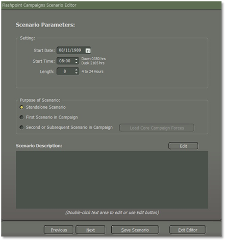
Figure 9
Setting
These set the date, time, and duration for the scenario. This is the starting point of making a new scenario standalone or for a campaign.
-
Start Date – Use the text field or the calendar button to set the Month, Day, and Year of the battle. This sets the possible equipment that can be used in the scenario.
-
Note
The game data is focused on 1980 to 1989. Setting dates outside of this range will result in not being able to fill formations with equipment, as available dates can be exceeded.
-
Start Time – This is the time of day for the start of the scenario. Based on the Map being used and the Start Date, the times for the start of Dawn and Dusk are noted so you can set the time to be day or night or in the transition between the two. !!! note
Night scenarios will favor the NATO forces if they are equipped with thermal sights.
-
Length – This is the length of time in hours for the scenario to play out. The bigger the map or size of the battle, the more time you may wish to start with. In most cases, 4 to 8 hours is enough time for most types of battles.
Purpose of a Scenario
The Purpose of Scenario selection here is to establish the type of scenario being created.
-
Standalone Scenario – Select this option if you are making a single scenario that can be played on either side.
-
First Scenario in Campaign – Select this option if you are making the first scenario of a campaign. Campaigns are single-sided battles where one side is always the player with a core force of units versus the AI (Battle Plans you will create for the AI side, see FM05: Battle Planning). Creating a Campaign is covered in FM06: Campaign Design.
-
Second or Subsequent Scenario in Campaign – Select this option if you are working on any additional scenarios for an established campaign. Once selected, the Load Core Campaign Forces will be enabled, and you can click this to load the core forces for the campaign you are working on.
Scenario Description
At the bottom of the first panel is the “Scenario Description” text box. The scenario description is used to tell players the background information that sets up the battle, but not mission specifics for each side. That is done later in the editor.
Clicking on the “Edit” button or double-clicking inside the text box will open the Create Scenario Description editor as shown in Figure 10.
The Plain Text Editor allows you to write your text narrative for the scenario and use simple HTML5 tags to enhance the look of the Scenario Description. See “Section 8. HTML Quick Preference” for HMTL tags.
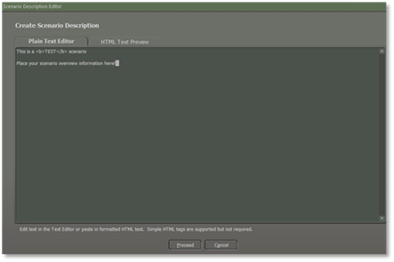
Figure 10
Clicking on the HTML Text Preview tab will display the formatted version of your Scenario Description. Once you are done with your scenario description and how it looks, you can click the “Proceed” button to save it as shown in Figure 10. Your Scenario Description will now show in the Scenario Description window.
You can reopen this anytime to add or change information or formatting.
Click the “Next” button to move to the next dialog page.
Map Markers
When designing a scenario, you can add several map markers to the game map that have various functions as illustrated in Figure 11.
These functions include map obstacles like mines, NBC contamination, fortifications, smoke, bridges, and Victory Point (VP) markers. The dialog shown below shows most of those markers.
The markers in the three lists represent markers by the player side and a set of neutral markers in yellow that can affect all units on the map. Side-specific markers in Blue for side one or Red for side two only impact the other side when a marker is encountered.
These markers on this dialog are optional and should be used to enhance your scenario where needed. Many of these markers have both full hex and hex edge trigger versions.
Smoke and Gas (from non-persistent attacks) can be found in the Neutral Map Objects listing.
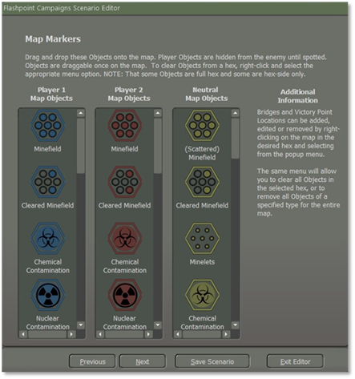
Figure 11
Placing Map Markers
To add a map marker, click on it in the dialog and drag it to the hex you want on the map as illustrated in Figure 12. Most markers cannot be placed on each other. The exceptions are markers like smoke, gas, and NBC effects. These markers can be placed over hex and hex edge markers.
Once you have all the markers on the map and you want to protect them from being accidentally moved when doing other actions like placing units, click on the Scenario Editor main menu bar and uncheck the Allow Marker Dragging option as shown in Figure 3. This will save on some possible frustration later when tweaking things.
{kind=link}
Figure 12
Another trick that might help place markers is to select Options from the Menu and then go to Map Contrast Options and set it to Strongly Muted Map Terrain, so the map is less colorful, and the markers stand out more.
Victory Point (VP) Markers
Victory Point Markers or VPs for short, are used to provide two important scenario design functions.
First, VPs are used to place important objectives on the map that both the player and the AI will be attacking or defending as the main aspect of the scenario. As a scenario designer, you can use VPs as a means of giving the AI player a sense of influence as to where it should go. When coupled with Battle Plans, VPs become the endpoints where forces will go during the battle.
The second function of VPs is to provide points to the side that controls the VP location at the end of the battle.
The values of the VPs should be tailored to meet the mission objective and to balance out VP point scoring with the value of each side’s forces.
Placing a VP Marker
- Placing VPs – To place a VP marker on the map, right-click in the target hex and select “Add/Edit/Remove VP Location” from the Popup Menu as illustrated in Figure 13.
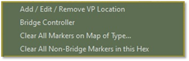
Figure 13
- VP Ownership – Each VP must have one of the three Ownership states as illustrated in Figure 14. The VP can be owned by Player 1. In this case, the AI will set up and defend the location if in the area and the enemy will move to take the location if in the area. The VP can be owned by Player Two with the same effect on the AI.
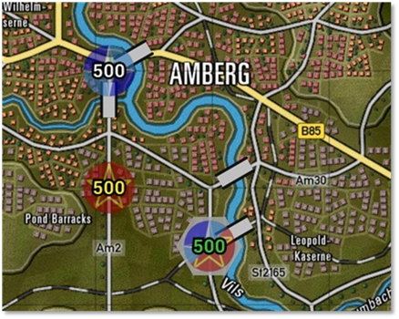
Figure 14
A location can be Unclaimed or owned by neither side and both sides will attempt to take them if forces are nearby. You use these ownership states to craft the time of battle. Attack/Defend scenarios are set with one side owning markers and Meeting engagements can be made using Unclaimed markers. Mixing these with various Battle Plans keeps the game dynamic for the players.
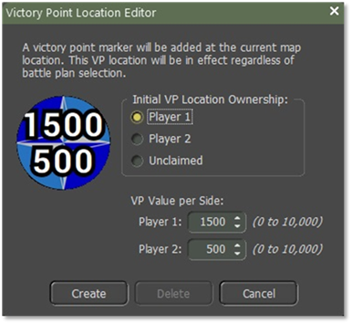
Figure 15
- VP Value – A new feature in Southern Storm is the ability to have split value VPs to allow you to better shape the mission objectives by having a location have more value and AI weight for a side as illustrated in Figure 15. You can enter a value or use the value spinners to set each of the values.
When you are happy with the ownership and values, click the “Create” button to place the marker in the selected hex as illustrated in Figure 16.
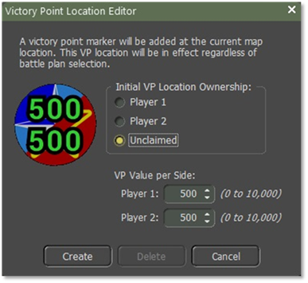
Figure 16
Editing/Deleting a VP Marker
If you need to tweak the value or ownership of a VP or remove it, select, and right-click the VP hex and the dialog will pop up as illustrated in Figure 17 with the selected VP’s information in the dialog box.
You can edit the values and ownership and click the “Update” button or if you wish to remove the VP from the map, you can click the “Delete” button.
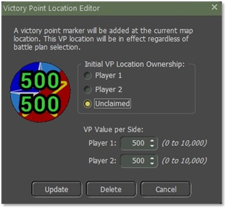
Figure 17
Bridge Markers
While the game engine will automatically add all required road and rail bridges to the map, you still can “blow up” bridges to show engineering actions before a battle or even add additional temporary bridges (again from pre-game engineering actions) to possible crossing areas on the map.
Basic bridges are shown on the map as white rectangles with hard black long edges. Bridges owned by one side will be blue or red in place of the white color as illustrated in Figure 18.
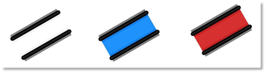
Figure 18
If you want an engineering unit to construct a bridge, the bridge will resemble what is illustrated in Figure 19. Once the bridge is completed, it will transform from the construction phase depicted as illustrated in Figure 18 to its finished state.
Figure 19
If you destroy a bridge, a red cross will appear over the bridge. This bridge is no longer capable of allowing units to pass over it as illustrated in Figure 20.
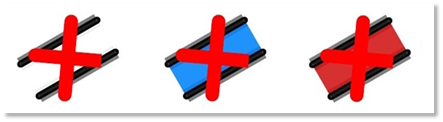
Figure 20
Adding a Bridge
To add a bridge, you need to select a hex next to a water obstacle and then right-click to bring up the Popup Menu, and then select “Bridge Controller” as illustrated in Figure 21 to open the dialog.
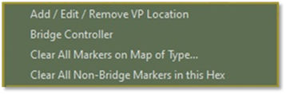
Figure 21
The first thing to decide for the new bridge is Ownership. If it is a public bridge (existing before the battle or being used as a fording point) set it as Public. If the bridge is being used to represent a placed engineering bridge before the scenario starts, you can select the side by setting it as Player 1 or Player 2. These will show as blue or red respectively.
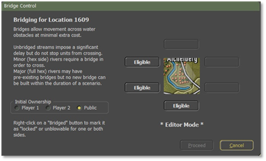
Figure 22
On the right side of the dialog, is the editor portion of the bridge placement tool. The selected hex is shown in the middle and the surrounding six sides will show eligible locations to add a bridge.
Here we only have three places to place a bridge as shown in Figure 22. Clicking the “Eligible” button will add a bridge at that location on the map and change the button to Bridged. Clicking the “Proceed” button will add the bridge to the map and close the dialog.
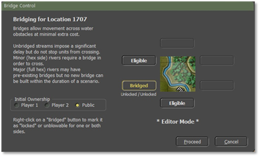
Figure 23
To remove a bridge, select the hex where the bridge is and open the Bridge Control dialog. Click the Bridge button twice to set it back to Eligible and then click the “Proceed” button to remove the bridge from the map.
Destroying a Bridge
Depending on the design of the scenario, you may want to have some of the bridges destroyed (before the scenario by engineers) to restrict travel during the battle.
To destroy a specific bridge, select a hex with the bridge in question and right-click that hex to bring up the Bridge Control.
As seen on the right, eligible bridges will be denoted with Bridged. Click on this button to switch it to Blown as illustrated in Figure 24.
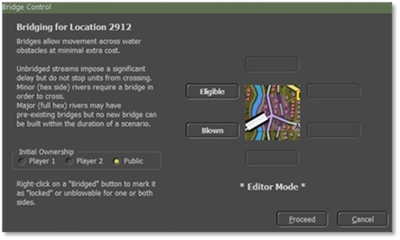
Figure 24
Once you click the “Proceed” button, the bridge will be marked as destroyed on the map as illustrated in Figure 25. You can undestroyed a bridge by selecting it and clicking the button back to Bridged.
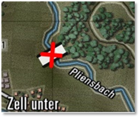
Figure 25
Constructing a Bridge
Lay/Recover Bridge – Allows an Engineer Short-Span Bridging vehicle to place or retrieve a temporary bridge over a hex-side water obstacle.
Engineering Bridging Unit must be next to a river hex, right click on an Engineer Bridging Unit which causes a popup screen to appear as shown in Figure 26, and select “Build Bridge.”
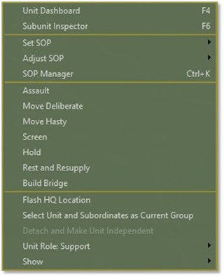
Figure 26
Once you click on “Build Bridge” a screen will pop up as seen in Figure 27.
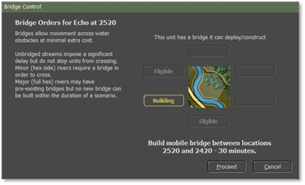
Figure 27
There were three eligible locations, select the “Eligible” button where you want the bridge to be built and it will turn into a “Building” button as illustrated in Figure 27. The Bridge Controller will state where and how long it will take to finish the building. Click on the “Proceed” button to start the building of the bridge.
There will be a Time Stamp in between the graphic symbol for constructing a bridge, which is 1700 hrs. when the bridge is completed as illustrated in Figure 28.
Figure 28
You can tell an Engineer Bridging Unit to move to a location by a river where you want to build a bridge. When you plot your waypoints to the river a popup screen will display as shown in Figure 29. Select the “Build Bridge” button.
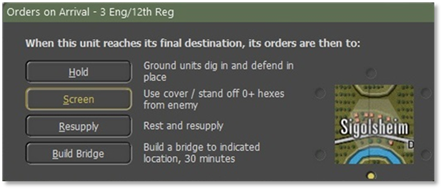
Figure 29
Once the Engineer Bridging Unit gets to the location it will start to build the bridge with a time stamp indicating when it will be finished building as illustrated in Figure 30.
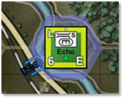
Figure 30
Figure 31 shows the bridge completed.
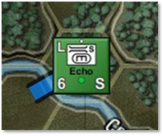
Figure 31
Now to recover the bridge, right-click on the bridging unit, and a popup display as shown in Figure 32. Select the “Remove Bridge”.
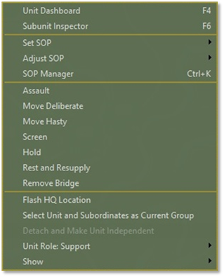
Figure 32
Once you select “Remove Bridge” another screen “Bridge Controller” will pop up as seen in Figure 33.
To retrieve the bridge, the Engineer Short-Span Unit must not have a bridge. “This unit has no bridge equipped and can recover a bridge” will be shown in Figure 33. If the unit has a bridge already it would state “This unit can demolish/blow a bridge”. Select the “Bridge” tab which will change to “Recovering”. It will state the location and how long it will take to recover the bridge as shown in Figure 33. Select the “Proceed” button when ready to remove the bridge.
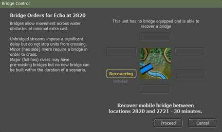
Figure 33
Locking a Bridge
In some scenarios, you may wish to lock bridges from being blown by the players if they have engineering assets in the battle.
If you select the bridge on the map right-click to bring it up and select the Bridge Control dialog you get the dialog as seen in Figure 26.
Right-click on the Bridged button and a pop-up menu will appear allowing you to lock the bridge from demolition by either side or both sides. You can go back later and unlock by bringing the dialog up, bringing the popup menu up, and selecting the unlocked option. Clicking the “Proceed” button will make the change on the map.
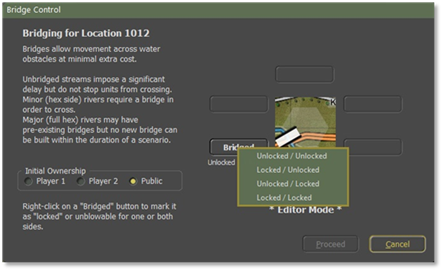
Figure 34
Marker Removal Functions
After you place markers on the map, you may need to remove some or even all those markers from the map when editing the scenario. To remove markers of different types across the entire map you need to right-click in a hex on the map and select the “Clear All Markers on Map of Type...” option on the pop-up menu as shown in Figure 35.
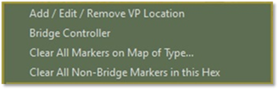
Figure 35
Doing that opens the dialog” Remove Map Markers” as seen in Figure 36.
You can then check or uncheck any combination of markers that need removal. Once the selection(s) are complete, click the “Proceed” button to have them taken off the map. There is no undo for this, so be sure that you want to remove them.
Note
If you select All Bridges and remove them, you will need to either add them back in manually or reload the map and start over. In most cases, there is no need to remove all bridges in a scenario design.
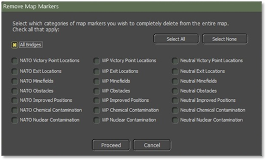
Figure 36
If you want to just remove non-bridge markers in a hex, right-click on the hex with the marker(s) to remove (should highlight) and select the “Clear All Non-Bridge Markers in this Hex” option from the pop-up menu as shown in Figure 37. The marker(s) in the hex will be removed and the menu closed. Like the other removal functions, there is no undo here, so be sure you want to remove them before clicking the menu item.
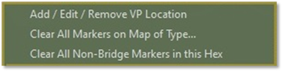
Figure 37
Additional Scenario Parameters
The next page in the Scenario Editor panel is the Additional Scenario Parameters page. This page allows you to set the (1.) Air Superiority Levels, (2.) Electronic Warfare Levels, and the (3.) Maximum Resupply Percentage. All these factors apply across the length of the scenario. The page appears as seen in Figure 38.
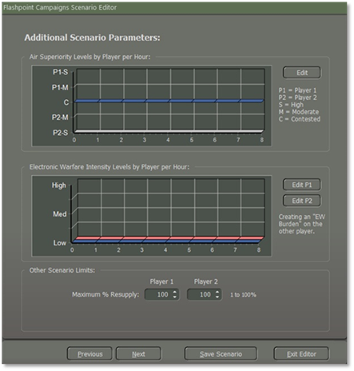
Figure 38
Air Superiority Levels
The top graph (1) represents the presence of fighter aircraft used to clear the skies of close air support and other enemy aircraft and helicopters over the battlefield. The greater the presence of a side’s Air Superiority, the greater the chance that enemy air strikes and even on-map helicopters run a risk of being engaged and shot down or in the case of air strikes runoff, so they do not attack.
Even when the airspace is Contested, both sides run a small risk of getting engaged and losing forces. During the game, any Air Superiority actions will appear on the screen as a dialog message telling players what has happened.
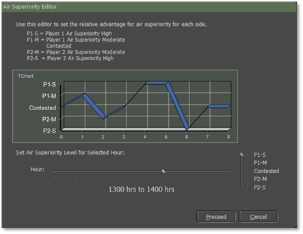
Figure 39
To set the levels seen in Figure 38, click on the “Edit” button to open the panel as illustrated in Figure 39.
Then set the Level of Air Superiority on the right (up for player one control or down for player two control) for each Hour of the scenario. Move the Hour control to each position to set the next Hour’s Level.
As you make these changes the graph will change to reflect the settings. The blue color graph represents “NATO” while the red color graph represents “Warsaw Pact”. This information is reflected in reports for both sides of the scenario when it is played. Once you set the levels click the “Proceed” button
Electronic Warfare Intensity Levels
The bottom graph (2) shows the levels of Electronic Warfare both sides are projecting into the battlefield to jam and spoof communications making it harder to issue orders.
To set the levels as seen in Figure 38 for each player click on the “Edit P1” or “Edit P2” buttons. Then set the Level of Electronic Warfare on the right (up for more interference or down for no interference) for each Hour of the scenario. Move the Hour control to each position to set the next Hour’s Level as illustrated in Figure 40. As you make these changes the graph will change to reflect the settings. This information is reflected in reports for both sides of the scenario when it is played. Once you set the levels click the “Proceed” button
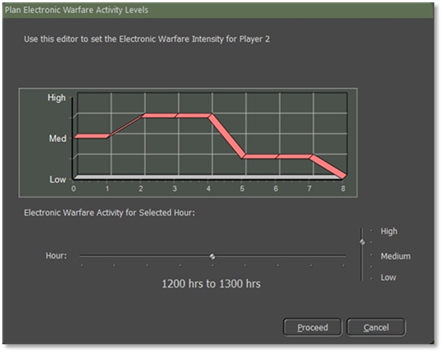
Figure 40
Other Scenario Limits
Now, The Other Scenario Limits (3) section of the dialog sets the maximum resupply level for the sides shown in Figure 41. This setting can be used to reflect limited resupply to a side during a battle. To set the value, either enter a value from 1 to 100 in the text box or use the spinners to set a value.
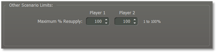
Figure 41
Once these items have been set, click the “Proceed” button to move to the next dialog page.
Player 1 Order of Battle
Now we get to the business end of the editor. This involves choosing and strategically positioning forces both on and off the map. Player One represents the “NATO” side. In Section 4.9 Player 2 Order of Battle, you'll be able to incorporate forces for the “Warsaw Pact”. Let's walk through the steps together.
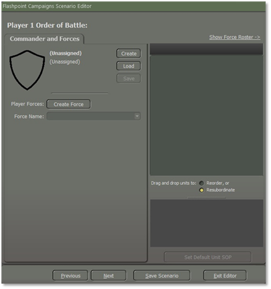
Figure 42
1. Click on the “Create” button to open the following Commander Selection dialog as illustrated in Figure 42.
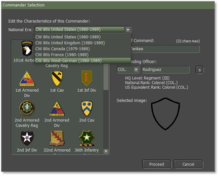
Figure 43
2. Select the Commanding Nation by using the drop-down as shown in Figure 43. Other forces can be added from other countries, but there must be one Commanding Force selected for the scenario.
3. In this case, the West Germans were selected. In this window, you can select a badge for the force. Some forces have many selections representing various historical formations and others like the West Germans have quite a few. After selecting a badge, the Force name will change to match the badge selected. Click on the “Confirmation” dialog to accept or reject the name change.
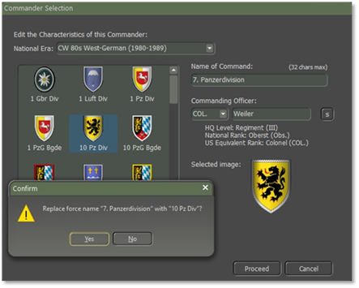
Figure 44
4. In the Name of Command text box, you can also rename the Command by typing in a name up to 32 characters in length.
5. You can select the Rank from the dropdown and change the randomly selected surname of the Commander. You can type in your name up to 24 characters or hit the “s” button to have one randomly selected from the Nation Datasheet Surnames listing. Click on the” Proceed” button when done with the Name and Rank selection.
6. Upon closing the Commander Selection dialog, you will find three buttons positioned to the right of the Player 1 Order of Battle display as shown in Figure 45, enabling you to perform the following actions:
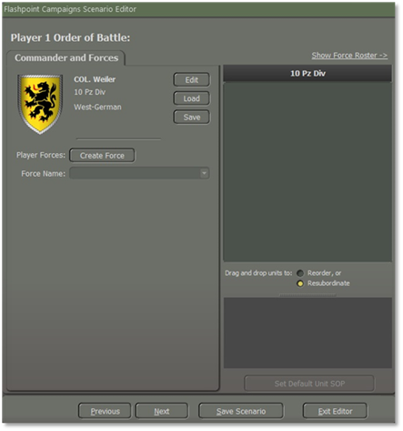
Figure 45
-
Edit – Clicking on the “Edit” button will reopen the Commander Selection screen Figure 43 and allow you to change any of the information including the National Era if you want to adjust the lead nation.
-
Load – Clicking the “Load” button will open the following dialog allowing you to select a Nation as seen in Figure 45.
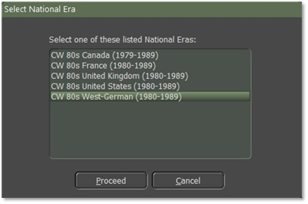
Figure 46
Click on the Leader you wish to load as shown in Figure 46, and then select the “Proceed” button.
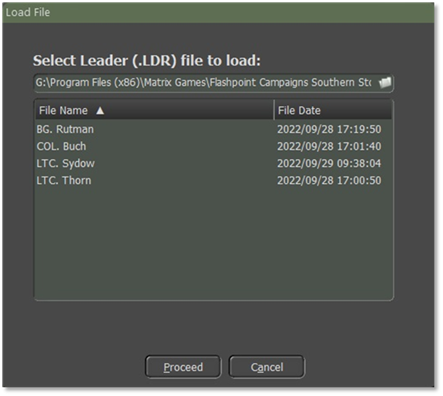
Figure 47
- Save – Clicking on the “Save” button will open the following popup dialog to allow you to save the current Leader setup to a file for use as shown in Figure 47.
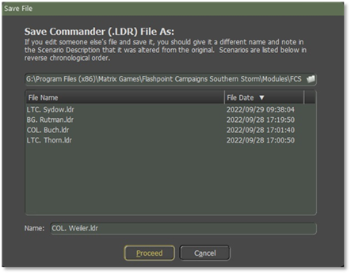
Figure 48
You can use the name as shown or enter your name for the file in the “Name” text box as shown in Figure 48. Click the “Proceed” button when you are ready to save the Leader information. As noted in the text, if you change an existing leader file, you will want to change the save name to avoid overwriting the original file.
Creating a Force
In this section, we will guide you through the step-by-step procedure of constructing a force. This involves the incorporation of both “NATO” and “Warsaw Pact” forces into a designated scenario.
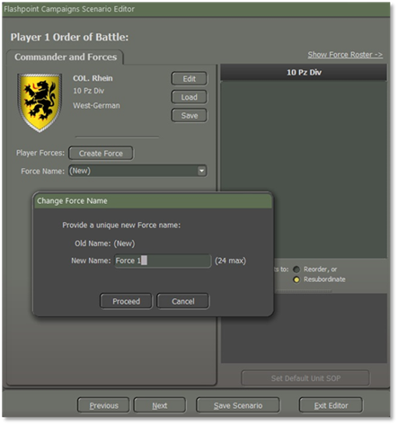
Figure 49
Once you have a Nation and Leader selected, it is time to add forces to side 1. Click the “Create Force” button and a Change Force Name dialog window will pop up as illustrated in Figure 49.
In the “New Name” field, name your force as illustrated in Figure 49, in this example, the name is “Force 1”.
The name should reflect what the selected force will be or do in the scenario. In most cases, you will be adding several forces to this side so having good names will help you organize.
Names must be unique and can be up to 24 characters in length. Once you have created a Name for the Force, click the “Proceed” button so that we can begin to add units.
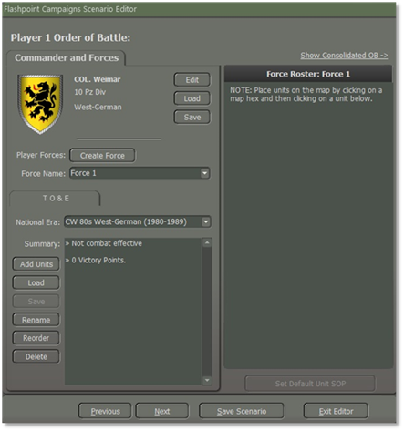
Figure 50
In the dropdown box, you can see and select any of the forces you have made for this side. This is useful if you need to edit forces after creating them.
The TO&E (Table of Organization and Equipment) tab is where you Add Units, load saved packages of units, save a package of units, Rename the current Force, or Delete the force from the scenario.
Note
Once you delete a force, there is no undoing it. Be sure you want to drop the entire force from the scenario.
After you click the “Add Units” button to open the Force Selection main dialog as illustrated in Figure 51.
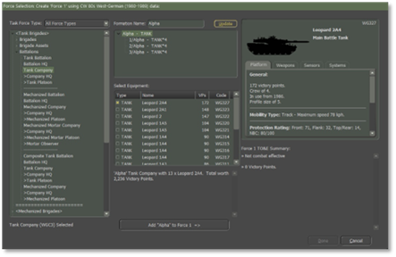
Figure 51
Starting from left to right, the first section (1) “Task Force Type” holds an expandable “Order of Battle” for the nation selected. You can expand a section by clicking on the right-facing chevron. You can collapse a section by clicking on a downward-facing chevron. The Battalions section has been highlighted and opened for viewing and selection.
When you click on an entry in this window, information is filled in in the other windows as shown above. In this case, a Tank Company has been selected.
The next section is the (2) Formation Name. Enter a name for the formation. In this case “Alpha”. These names are based on the historical narrative of the scenario.
Any name you enter in this text field will be updated through the formation when you click the Update button. If you do not enter a name and click the “Update” button, you will get a Confirm popup window as seen in Figure 52 asking “Are you sure” statement, if you click the “Yes” button it will have no name for the unit, if you click the “No” button you can then add the name of your choice.
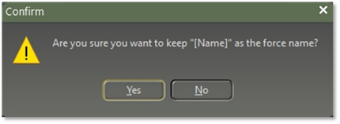
Figure 52
The second function is to see the breakdown of the selected formation from the (3) OOB tree.
This window allows for the selection of specific equipment based on the formation information seen in the window. All possible selections for the type of equipment are listed in the window. Select each type by checking the box for each type listed. In this case, the TANK the Leopard C2A4 is selected. The information is illustrated in Figure 53.
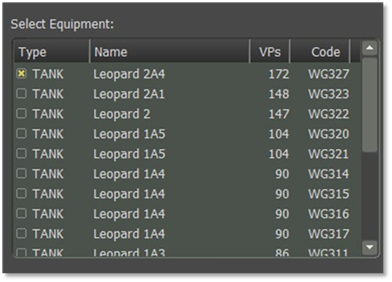
Figure 53
The fields in Figure 53 have the following meanings:
a) Type – These are the data types used to select units from the database seen in the formation descriptions in the window.
b) Name – This is the name of the unit type being selected.
c) VPs – This is the Victory Point cost (VPs) for the units. The higher the cost the more capable and expensive the platform is.
d) Code – The code is the alpha-numeric ID for the platform in the Units tab of the national database. The same ID can be seen in the upper right of the SUI window (4) as seen in Figure 54.
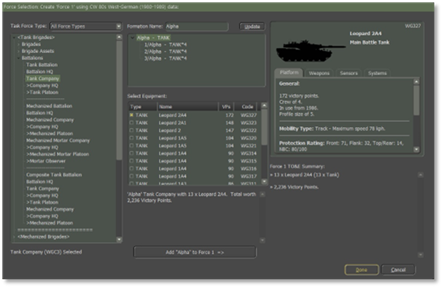
Figure 54
Once the Name is updated from (2) and the unit types are selected in (3), the text description of the formation is updated in this window for review. If this is the package you want to add to the Force (in this case “Force 1”), click the “Add [formation name] to [force name] =>” button. The results are shown in Figure 54.
Next is the Subunit Inspector (4) which can be used to review any of the units in the four-tabbed panel that covers the Platform, Weapons, Sensors, and Systems that the selected sub-unit has. Select Equipment area (3) by clicking on any of the entries. In this case, the “Leopard C2A4” was selected. The layout and information shown in the Subunit Inspector (SUI) can be found in the “FM01: Game Operations, Section 14.3” document.
In the final part of the window, (5) you will get a breakdown of all the elements in the noted force. In this case, Force 1 is shown in Figure 55.
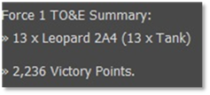
Figure 55
You also get a total for the lift available in the unit for passenger transport and then the total VP value of the force in its current layout. Once you’re done click on the “Done” button.
Set Default Unit SOP
Once we created a Force they are in the Force Roster as illustrated in Figure 57. We want to start to work on the SOP.
SOPs (Standard Operating Procedures) are unit instructions on how to behave in certain situations on the battlefield. This menu item provides a means to adjust SOP characteristics for selected units or to set SOPs based on the type of unit and the selected SOP package for the selected units.
This tool gives you the flexibility to adjust many different operational parameters of your units, per unit, per waypoint, and for new orders. Grayed-out parameters are not available for the selected unit.
These SOPs can be applied to the selected unit or easily copied to other units in the formation or of a similar platform type.
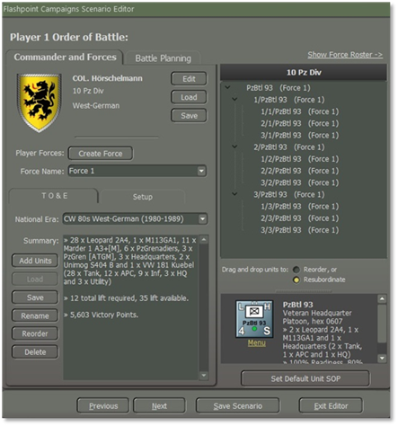
Figure 56
To do that we will highlight the Panzer Headquarters and select the “menu” under the icon and a popup screen will appear select “SOP Manager” (Ctrl+k) as illustrated in Figure 57 or select the “Set Default Unit SOP” button as shown in Figure 56.
Figure 57
We will cover the “Set SOP” and “Adjust SOP” in more detail in the “FM05: Battle Planner.”
Figure 58
Scope
The Scope sets which order (new, current singular order like Screen or Hold, or per waypoint of a move) the settings are applied to.
Once all the settings are adjusted to the parameters you want for the unit(s) there are options on how to Apply them as noted in Subsection 4.5.2.7.
Selecting the “? Scope” button will pop up the following message providing information on how the Scope is used as shown in Figure 58.
Figure 59
Stance
-
Tactical Initiative – This is the likelihood of a unit deviating from its orders or pathing based on the current situation it is in (under fire, outnumbered, etc.). These settings are None, Slight, Moderate, or Generous.
-
Acceptable Losses – This is the unit(s) willingness to take losses before seeking a change in orders. This works with the Tactical Initiative above to set how a unit reacts. The settings for this item are Do or Die, Substantial, Moderate, or Minimal.
-
Preferred Standoff Range – The number of 500m hexes you wish the unit(s) to be distant from any detected enemy units.
Combat
-
Direct Fire Discipline – This sets the range or ability to shoot at enemy units in direct fire. The available settings are Refuse fire, Hold until fired on, Point blank (0 to 1 hex), Short Range (⅓ Max Range), Medium Range (⅔ Max Range), and Maximum Range.
-
Relocate When – This determines under what condition a unit will seek to scoot to a new location for better protection or to avoid enemy fire. The possible selections are After each fire mission, After all fire missions, While the enemy spotted, After receiving any fire, After receiving direct fire, After taking any losses, After taking direct fire losses, or Never. Some of these settings work better for certain types of units. The after-fire mission settings work better for artillery for instance.
-
Provide Direct Support to – This setting is for Indirect Fire Units only and allows you to set specific direct support operations for your artillery assets. The default setting is support for All Requesting Units. Other options that support specific units are Units in the same formation or lower, Specified HQ or lower, or Refuse all requests (which stops the FSCC from using this unit in any supporting call for fires).
Movement
-
Preferences – When a unit moves from waypoint to waypoint there are a few options for how that travel can be done. The hasty move will prefer roads, and Deliberate or Assaulting move orders will mix roads with cross-country movement. You can set stricter movement preferences by checking the boxes for Concealment (more off-road and seeking better-covered terrain to move through, Roads (favor taking roads instead of cross country), and Avoid NBC (which will path units around NBC-contaminated locations on the map).
-
Minefield Contact – This is the unit(s) response to entering a minefield. The options here are Ignore and Run (do not delay and accept the potential for more subunit losses crossing the field), In Stride Breach (units slow down to follow a leader through the field hoping to avoid mines by traveling in the same tracks), or Stop and Reduce (units halt and either wait for engineers to remove enough mines to open a path through or do the work themselves at a slower rate).
Transports
-
Passengers Disembark at Range – There are two options for disembarking transported troops and teams from their carriers. The first option is setting a few hexes (500m) from the final waypoint. This is useful for assaults or recon efforts in hostile territory. The other option is setting a few hexes from a spotted enemy. This is useful if on the move and your troops encounter unexpected enemy contact.
-
Carriers when Empty – Once transporting APCs (Armored Personnel Carriers) or IFVs (Infantry Fighting Vehicles) disembark their troops or teams, this setting tells the transporting units what they should do. For APCs, the better choice is to Hide Nearby (seek cover and do not engage the enemy) as these vehicles are usually poorly armed and armored. The other option is to Support Passengers (seek good cover but engage enemy units with on-board weapon systems) to improve firepower against the enemy, but risks losing transports to enemy fire.
Recovery
-
Resupply – This option lets you set a limit for the unit’s Ammo level. When it hits the trigger level or below, the unit will go into resupply until it either Recovers to the set percentage over time or recovers for a set amount of time which restores an amount of ammo based on the amount of time set.
-
Readiness – This option lets you set a limit for the unit’s Readiness level. When it hits the trigger level or below, the units will go into resupply until it either Recovers to the set percentage over time or recovers for a set amount of time which restores an amount of readiness based on the amount of time set.
Inspect and Apply
There are six buttons on the left as shown in Figure 58.
-
Inspect Selected Unit – If you want to select and see the SOPs for another unit on the map, select a new unit on the map and then click the Inspect Selected Unit button to have the SOP Manager display its SOP values.
-
Apply to This Unit Only – This applies all the changes made only to the selected unit.
-
Cancel – Restores the original SOP values before any changes are made. Once You do an Apply, there is no way to revert changes via this option.
-
Apply to Self and All Subordinates – This setting is helpful if you want to set all the units in a formation (HQ and subordinates). The higher the HQ, the more units will be changed down the order of battle chain. When applied a dialog will pop up showing all the affected units.
-
Apply to All Units of the Same Type – This setting is useful if you want to set all the units of a selected type (like Tanks, APCs, HQs, etc.). When applied a dialog will pop up showing all the affected units.
-
Apply to This and Later Unit Orders – This option allows you to take the current SOP setting and apply it to all the orders in the Scope list.
At the bottom of the dialog is a check box to Automatically Apply Current Settings on the Scope Change. If this is active, any changes that are applied to the indicated scope will apply if you select a new unit and click the Inspect Selected Unit button. With it active if you switch to a new order in the scope selection, any changes will be applied to the previous order scope.
Adding to an Existing Force
After clicking on the “Done” button you will return to the Player 1 Order of Battle, and you realize that you want to add an existing force to Force 1 so that they will be operating together on the battlefield. You should take care not to mix units of different functionalities in a Force. For example, add recon to a tank or mechanized Force. The game will not allow air and helicopter units to mix with ground units, nor can air and helicopter be mixed. The idea is to have different Forces based on mission-focused capability. You will need to split larger formations into discreet forces so the AI can utilize them correctly and Battle Plans can be constructed for those Forces properly.
To add more units to the existing force we need to take the following steps.
Figure 60
1.Make sure to select the correct force you wish to add more units to from the dropdown box, in this case, it will be “Force 1”.
2.Click the “Add Units” button to open the Force Selection screen.
3.Choose the formation, name, and subunit selections as noted above. In this case, we are selecting a Mechanized Platoon which we will label as” Bravo” to add to Force 1 as illustrated in Figure 61.
Figure 61
4.After clicking the “Add Bravo to Force 1” button, you should have the updated TO&E summary in the window. This will note the VP cost total and the Lift for passengers in the force as shown in Figure 62.
Figure 62
Click the “Done” button to return to the Scenario editor dialog and close the Force Selection screen.
Creating Additional Forces
We are going to create additional forces to the forces to side 1. First, we Click the “Create” Force button and a Change Force Name dialog window will pop up as shown above.
In the New Name field, name your force, in this example, the name is going to be “Force 2” as illustrated in Figure 63.
Figure 63
Once we have labeled the additional Force Name, then click on the “Proceed” button.
Figure 64
Here you will see that there are two Forces, Force 1 and now Force 2. Force 2 is highlighted as illustrated in Figure 64, and we will start to add units to Force 2 as we did for Force 1 in “Section 4.5.1, Creating a Force”.
Saving a Force
Figure 65
To save a Force, make sure that the Force Name is selected for the Force that you want to save as illustrated in Figure 65. Click on the “Save” button and a popup window screen as shown in Figure 66. Make sure that this is the Force you want to save, for this example, we will save “Force 1”. Click on the “Proceed” button to save the file.
Figure 66
It will be saved as a .pkg file in the FCSS\Modules\FCSS\ScnConstruct\West German folder.
Loading a Force
To load a saved National Force, it must be from the same country that it was saved from. For example, if you saved the National Force Package from West Germany and you try to load it to a British scenario it won’t work. It will be blank as shown in Figure 67. So, to load a German saved force the National Era must be West German as shown in Figure 68, if you want to load a West German force onto a British-made Scenario.
Figure 67
You must create a new Force Name, for this example, we will call it “Force 3”, you need to go to the “National Era” dropdown box and select “West German” by highlighting it as illustrated in Figure 68.
Figure 68
Select the “Load” button and you will get a pop-up “Load a National Force Package file” screen as illustrated in Figure 68.
Figure 69
Highlight the file you want to load; in this case, it will be “Force 1”. Select the “Proceed” button as shown in Figure 69.
You must highlight the Force that you want to load as illustrated in Figure 69. If you do not highlight the force and click the “Proceed” button, you will get an error as shown in Figure 70. Click the “Okay” button and then highlight the force to load.
Figure 70
If you highlight the force to load you will get another screen that will pop up “Secure Transmission Regarding PzBtl 23 as shown in Figure 71. Here we can give a unit a unique name if we choose to.
Figure 71
Here you can edit the name of a unit and any subordinate units. What we are going to do is replace the unit’s name from (1) “PzBtl 23” to (2) “PzBtl 30” as illustrated in Figure 72. The (3) “Before” section has the old unit’s name while the (4) “After” section has the new name of the unit, then select the “Proceed” button.
Figure 72
If you do not want the subordinate units’ names to be changed, unselect the (5) “Apply changes to all subordinate units of this unit” as shown in Figure 72. Then when finished, click on the “Proceed” button.
Figure 73
If you do not want to change any names to any unit select the “Cancel” button and the Force will load.
Here you can see that the West German Force 3 is showing in the OOB Tree along with the British Force 2 even when the save Force file is labeled as Force 1 it will update the Force to what you labeled it when naming the Force Name as shown in Figure 74.
Figure 74
Deleting a Force
Figure 75
To delete a Force, make sure you have the correct Force name in the “Force Name” drop-down and click on the “Delete” button and every unit in that Force will be deleted as shown in Figure 75.
You must make sure that this is what you want to do because once you delete a force it is gone for good unless you saved the Force file before deleting it.
Renaming a Force
Figure 76
To rename a Force Name and keep all the units associated with it you can click on the “Rename” button as shown in Figure 76, and a “Change Force Name” dialog window will pop up as seen in Figure 77.
Figure 77
Type what you want it to be in the New Name box which can be up to 24 characters max and then click on the “Proceed” button and the new Force Name will replace the old Force Name.
Reorder Forces
Figure 78
To Reorder the forces in the OOB Tree click on the “Reorder” button as shown in Figure 78 and a “Reorder Forces” dialog window will pop up as in Figure 79.
Figure 79
To Reorder a Force unit in the OOB Tree, first, highlight the unit for example “Force 1” and then use the “Down” button to move it down or if you want Force 2 before Force 1 just highlight it and then click on the “Up” button. Once you are done then click the “Proceed” button as shown in Figure 79.
There are two other ways to Reorder Forces. The first way of doing that is we need to have the OOB Tree in (1) Consolidated OB mode. When you switch to Consolidate mode the (2) “Drag and drop units to” Reorder or resubordinate units will appear as shown in Figure 80.
Figure 80
Let’s talk about the Resubordinate unit first, to move a unit for example, if we want to move (1) “3/Bravo” from his parent unit to another parent unit which is called “Attach” we must select the button (2) “Resubordinate”. To do that we must first highlight the unit “3/Bravo” left click on the unit and drag it up to the unit that is highlighted as illustrated in Figure 81, and it will be attached to the unit.
Figure 81
Now “3/Bravo” a Mech Plt” is attached to “Alpha Company” a Panzer Company as shown in Figure 82.
Figure 82
The next way to “Reorder” a unit is by selecting the (1) “Reorder” button. The “Reorder” unit is only for moving the unit within the parent company, for example, we want to move (2) “3/Bravo” to the top of the Bravo Company order as illustrated in Figure 83.
Figure 83
To do that we must highlight (1) “3/Bravo” and left click and drag to (2) “Bravo” company so that it will be on the top of the order as shown in Figure 84.
Figure 84
The principle is the same if you want to move Forces or just units.
Show Consolidated Order of Battle (OOB)
Figure 85
The screenshot that is displayed in Figure 85 shows a (1) “Consolidated OOB” to show a (2) “Force Roster” select the link.
Show Force Roster
Figure 86
The screenshot that is displayed in Figure 86 shows a (1) “Force Roster” to show a (2) “Consolidated OOB” select the link.
Deploying Forces on the Map
After creating forces for both sides, we must place the units on the map. Each task force must have a designated setup area on the map where it will start the game. The first step will be setting up the deployment zones and then placing the units on the map.
Note
This would be a good time to set your unit’s SOPs, for a good example see FM03: Tutorial Operations and FM05: Battle Planner.
Figure 87
Looking at Figure 87, we must select the “Setup” tab then we will start by Creating an Area on the map by selecting (1) “Right drag the mouse on the map to”: (2) Paint. You can create individual hexes by just right-clicking on the map or right-clicking, holding, and dragging the cursor to create a large area on the map. If you need to erase a setup zone, select the (3) “Erase setup hexes” and right-click on the hex.
If you need to paint a larger area on the map you can increase the size of the brush by using the (4) “Brush Size” up and down arrows. The size of the brush can be only 1 - 9.
Another way of placing a unit on the map without going to the Setup Tab is by just left-clicking on the map and then left-clicking on the unit in the Tab Force Roster.
The last way to create setup zones for your units is if you have a setup zone already created for a force(s), you can open the dialog and select them for a new unit or force. It saves time setting things up or shifting things around when making Battle Plans and to do that, open (5) “Use Existing Defined Area” and select them for a new unit or force. To do that click the “Select” button as shown in Figure 87 which will cause a popup window screen as shown in Figure 88. The list of the setups by the Forces you created will be displayed in the “Select an area to use” box as shown in Figure 88. Next, click on the “Save List” button as shown in Figure 88.
Figure 88
A popup window “Save a Predefined Areas File”, Figure 89, to save a predefined zone is that the file is saved with the name you type in the “File Name” box. For this example, I saved them as the Force Name as illustrated in Figure 89.
Figure 89
The saved files will be in the map folder, for example, this will be in the “Aichelberg” folder as shown in Figure 90.
Figure 90
So, to put this in use, I want to add a Force 1 setup zone for another Force to use. I have created a new Force Name labeled “Force 3”. I added the units but did not place them on the map. To do that I must make sure that I have Force 3 in the “Force Name” drop-down box. Then bring up the “Predefined Area Selection” window. Highlight (1) Force 1 then select (2) the “Proceed” button as illustrated in Figure 91. Force 3 now has Force 1 setup zones.
Figure 91
Once Force 3 has Force 1 set up zones on the map, to keep them for Force 3, you must then save it by clicking the “Save List” button and saving the file as shown in Figure 91.
Placing Units on the Map
The units you place on the map will be the setup that the player’s aide forces will be shown when a player starts the scenario. To initiate the deployment of a unit, first, select the desired hex on the map by clicking on it. Subsequently, click on the corresponding unit in the Force Roster as seen in Figure 92.
The selected hex will be incorporated into the Force setup zone, and the unit will be deployed in that location as shown in Figure 92.
Figure 92
If you need to move the unit that you place left-click and drag the unit icon to a different location on the map.
Once you place a unit on the map and you need to find the location of a unit you click on the (1) hex number and the hex will flash for a few seconds to show the location as shown in Figure 93.
Figure 93
If you place units on the map and decide to remove them from the map, select the (1) Menu that is under the icon as shown in Figure 94 will cause a popup window as shown in Figure 95. Select the (1) Reset Location to “Not Deployed” as shown in Figure 95.
Figure 94
Figure 95
It will place the unit back in the Force Roster as (2) “Not Deployed” as shown in Figure 94.
Deploying Units on and off Map
You are demonstrating the process of deploying artillery and air units on and off the map. We’re going to start with Artillery and Air units off the map and then show placing air units (helicopters) on the map. If you wish to deploy a unit off the map, there are two methods. The first involves placing a unit on the map and then deciding to deploy it off the map. To do this, right-click on the unit, and a popup screen will appear.
The second method is to select the “Menu” below the unit as illustrated in Figure 94.
Choose option (2) "Set Location to Off-map and Edit Distance Away," as illustrated in Figure 96.
Figure 96
Once you select “Set Location to 0ff-map and Edit Distance Away", a popup screen is shown in Figure 97.
Deploying off-map Artillery Support
If Artillery units are placed on the map, it might be visible to the enemy, making it vulnerable to counterattacks. On the other hand, keeping artillery off-map can provide the element of surprise, allowing for strategic positioning and minimizing the risk of immediate detection.
Before beginning to set the unit distance from the center of the map, we want to show the range coverage that the unit selected can cover on the map.
Select (1) “Show Range Coverage on Map” to display the range ring as shown in Figure 97.
Top of Figure 97 is information (2) on the size of the map, unit name, and maximum range.
Figure 97
When you have, for example, an Artillery Battalion and you want all the units to be included with the battalion headquarters to be in the same location you need to select (7) “Apply Same Values to Subordinates”.
Figure 98 illustrates the range circle of the artillery unit on the map when you activate the (1) "Show Range Coverage on Map" option.
Figure 98
To move the center of the unit (3) North (-) or South (+) offset from Map Center use the up/down arrows (-26 … 26km)
To move the center of the unit (4) East (+) or West (-) offset from Map Center use the up/down arrows (-29 … 29km)
In this instance, I relocated the unit's center to the west by 3 kilometers from the nearest edge of the map. Refer to Figure 99 for an illustration of the unit's position on the map and its coverage.
Figure 99
The (5) % Cover in this Location indicates the amount of cover the unit has per terrain. Currently, it doesn't have any impact on off-map units, but it will be soon. It is suggested to leave it as is for now, which is 25 by default.
As (6) Chance of Detection in this Location, represents the likelihood of an artillery unit being detected by counter-battery radar each time it fires a round. It is recommended a value of around 4%, which seems appropriate. However, it is advised against adjusting it to less than 3% or more than 5%. It is recommended that players refrain from changing the default values currently.
When all is done the unit displayed in the OOB Tree will show how far the unit is from the edge of the map as illustrated in Figure 100.
Figure 100
Deploying off-map Air Support
Off-Map Air Support comprises various types of propeller or jet-powered aircraft with diverse missions aimed at engaging targets on the battlefield. There are Strike, SEAD, Recon, and Utility versions of aircraft. These aircraft remain off the map, specifically in designated loiter areas until they are directed by the player or FSCC (Fire Support Coordination Center) for air strikes. Upon completing the air strike, surviving aircraft either return to base for rearming if out of ammunition or resume station if weapons are still available. Following rearming, they await future assignments by returning to the loiter area.
When deploying units off map they cannot be mixed, Aircraft and Helicopters in the same Force a popup screen as shown in Figure 191 will appear. Click the “OK” button.
Figure 101
Create a new force as shown in Section 4.5.1 Creating a Force. For this example, we will create a Force labeled “Air”.
Add Units for which we will select “Air Support”, “Aircraft”, “Aircraft Section”, and “Strike Aircraft Section” as illustrated in Figure 102.
Figure 102
Aircraft cannot be placed straight onto the map, you must select “Menu” located underneath the icon. Select “Set Location to Off-map and Edit Distance Away”. A screen will pop up as shown in Figure 103. You can position up to 250km offset from the map edge. As seen in Figure 103 the default is set for (1) 90km from the nearest map edge. You adjust the (2) Offset from Map Center. You do not need to do anything to the (3) Cover or Chance. Nor (4) Show Range Coverage on the Map is not needed for Aircraft.
Figure 103
Deploying on-map Air Support
On-Map Air Support comprises various types of helicopters that are included in the game. There are Attack, Scout, and Utility versions of Helicopters. Helicopters can carry a variety of weapons geared to anti-armor or anti-personnel missions, but they can also be assigned to perform reconnaissance tasks. On-map helicopter support is directed by the player.
The Forward Arming and Refueling Point (FARP) unit is used as the base for all helicopters. This unit acts as the high HQ for helicopter operations and is the location to send your helicopters back for rearming and resting during a battle. If the FARP is missing/destroyed, then the unit will go to the current highest HQ on the map to resupply.
Depending on movement orders, helicopters will fly Nap of the Earth (NOP) using terrain to screen and cover their movements when in Hunt Move or doing a Deliberate Move. They will fly at low altitude if executing a hasty move.
Click on the “Add Units” button for which we will select “Air Support”, “Helicopters”, “Helicopters Section”, and “Attack Helicopters Section” as illustrated in Figure 104.
Figure 104
For this example, we will select two Attack Helicopter Sections and resubordinate them to FARP 1 as shown in Figure 105.
Figure 105
- Eagle 1 is set to arrive around twenty minutes. 2. Eagle 2 will start on the map. 3. If they need to resupply, they will move to FARP 1. As illustrated in Figure 106.
Figure 106
Deploying Reinforcements
Deploying reinforcements adds a layer of complexity to war games, requiring players to make strategic decisions that can have a significant impact on the outcome of battles.
Reinforcements are typically used to strengthen a position, counter an enemy threat, or support existing troops.
We’re going to show how to place units on a map as reinforcements.
Figure 107
For this example, we will place the West German Panzer company units on the west edge of the map as illustrated in Figure 107. Right-click on the unit and select “Unit Parameters Setup” a popup screen as shown in Figure 108.
Figure 108
-
To set the time for the arrival of reinforcements by using the up/down arrows in minutes, for this example it is set for 30 minutes for the arrival of the units.
-
By selecting “Apply to all subordinate units of this unit” will apply to all the Panzer units in the company as shown in Figure 105.
-
The local Force is the Force Package you are currently working on. Say you have 3 packages, each of a Leopard 2A4 tank company. If you edit the tanks in one of the companies, you can have those same edits apply to the other two force packages of tanks or not using this checkbox. The thought is that you will want to distinguish between them at times and this saves a lot of clicking later.
-
By selecting the “Unit setup hex is locked” the units are locked in that hex and players cannot move the units to another hex.
Figure 109
Ammunition Loadout
After creating your forces, you may need or want to make changes to the ammo loadout to your units. First, select “Menu” which is located under the unit icon. To do that you open the Unit Dashboard and select “Define Ammunitions Loadout” as shown in Figure 110.
Figure 110
When you select “Define Ammunition Loadouts” a popup screen is shown in Figure 111. For this example, we will look at a tank platoon, ½/PzBtl 244 as shown at the top of Figure 111.
Figure 111
1. Type: List the type of equipment and/or personnel. Use the drop-down arrow to display a list of all the equipment for that platoon as shown in Figure 112.
Figure 112
2. Weapon: List all the weapons that are in the Platoon as shown in Figure 113. Use the drop-down arrow to display a list of all the equipment for that platoon.
Figure 113
3. Ammunition carrying capacity for this example is 42 total for the selected weapon as shown in Figure 114.
Figure 114
4. Munition Type: This is a list of the type of ammo that this unit is carrying as shown in Figure 115.
Figure 115
5. We know that the total amount of ammo for this Leopard 2A1 is 42. But I want to change the amount of ammo for, for example, I want to remove the High Explosive Anti-Tank rounds from 14 to 0. To do that you must highlight the type of ammo and then highlight the number of rounds in this case 14. Using the drop-down arrows, you can make the changes. I elected to reduce it to 0. When doing so the “Remaining available capacity will change from 0 to 14 as shown in Figure 116. Select the ammo on which you want to add and then select the number of rounds and up and down arrows which will add the amount of ammo and the remaining available capacity will change.
Figure 116
6. “Reset List” button, select the button, if you decide to reset the ammo amount back to the default. When you select the button a popup screen to confirm. Select the “Yes” button and it will reset to default. If you select the “No” button there will be no update to default as shown in Figure 117.
Figure 117
7. Apply is self-explanatory, how you want to apply the changes to this unit, the same type, or all units of this type.
Once you have completed the changes select the “Apply” button and then the “Exit” button.
Default Deployment Zones
After Section 4.8 Deploying Forces on the Map, you can set up default zones. Figure 118 shows a highlighted unit with just a single setup. If you try to move the unit to a different location on the map you will get a popup on the map as shown in Figure 119.
Figure 118
Figure 119
Figure 120 shows a highlight unit that has a larger size setup zone. You can then move that unit to a different location on the map.
Figure 120
Player 2 Order of Battle
After deploying all Side 1 units on the map or positioning them off the map, click the Next button at the bottom of the dialog to proceed to the units for the "Warsaw Pact" forces in the scenario. Follow the steps outlined in Sections 4.5 through 4.9. Once you've completed the forces for side two, click the "Next" button to move on to working on the Player Briefings, as illustrated in Figure 121.
Figure 121
Player Briefings
Figure 122
Once you click the “Next” button after setting both player sides a popup window “Player Briefings” is displayed as shown in Figure 122.
1. This selection allows you to select which side Scenario Briefing is being displayed and worked on.
2. This selection allows you to switch between the Mission Briefing or the Threat Assessment for the selected side.
3. Click the “Edit” button to open the window on the right with the plain text editor. This editor can use simple HTML 5 tags in the text. See “Section 8 HTML Quick Preference” for HTML tags.
4. This window shows the current generated Briefing or Assessment based on the selections.
Figure 123
5. This tab window is the plain text editor for you to write the various Briefings and Assessments as shown in Figure 123. You can write your own or edit the Auto-Generated versions made by clicking the “Auto-Generated” button at the bottom (7).
6. Switching to this tab will show the actual display version of the plain text window if HTML tags are used.
7. Clicking this button will Auto-Generate either a Briefing or Threat report based on the selections for the selected side based on our provided template. You can add, edit, or remove anything from these templates to fit the narrative of your scenario.
8. When you are done with your edits for the Briefing or Assessment click the “Proceed” button to save these edits or cancel to return to the Selection Dialog.
Figure 124 shows the Auto-Generated Player Brief by clicking the “Auto-Generate” button.
You can edit the content in the Plain Text Editor Window and look at the actual output in the HTML Text Preview as needed.
Figure 124
Figure 125 shows the auto-generated Threat Assessment from clicking the “Auto-Generate” button. You can edit the content in the Plain Text Editor Window and look at the actual output in the HTML Text Preview as needed.
Figure 125
Note
If you make changes to any of the forces in the scenario, you will need to adjust the numbers shown in the briefings or redo the briefings with the auto-update and add back in your details.
Best Practices for Mission/Threat Briefs
The following pointers are offered to help scenario designers with their briefings.
-
Using the templates can help make sure you are giving the players all the essential information for their side of the scenario.
-
Keep the information focused on the details and keep the items short in length.
-
Focus on the key points of the mission that the player needs to know and accomplish.
-
Threat assessments can be made either vague or detailed depending on how you see the pre-battle intelligence of the battle. Sometimes the intel folks are wrong or some of the details are misunderstood.
-
The mission briefings should follow the scenario narrative that you wrote in the Scenario Description panel, but you do not need to repeat all that information. Focus on providing the side specifics details.
-
Make this one of your last items to do after scenario testing, to avoid missing details in forces if you edit items in the scenario.
Mission Graphics
Mission graphics are crucial in scenarios to improve the player's situational awareness, enhance immersion, and facilitate effective communication of mission-related information. These visual elements contribute to the overall gaming experience and play a key role in guiding players through complex scenarios and objectives.
Open the Scenario Editor select Scenario and load the scenario. When the scenario is loaded go to the Counters tab and select “Hide unit Counters” as shown in Figure 126.
Figure 126
Next, go to the “Staff” tab and select “Copy Map to Clipboard for Mission Graphics” as shown in Figure 127
Figure 127
Once you copy the map, open PowerPoint. Paste the map into a PowerPoint (or an equivalent) slide. Draw a box with no fill over the map. Add the mission graphics like the ones shown in Figure 128, and Figure 129.
Delete the map after finishing adding the graphics, by grabbing the map with the left mouse button to one side so that you see the box that you made with no fill. Right-click on the map and select delete. You will have just the slide with the mission graphics on it.
Figure 128
Figure 129
Copy and paste onto a Paint program, for example, I use Paint.net. Use the magic wand select the white area on the slide and then select the “Delete” button on the keyboard. The white area will be transparent. Figure 130 shows an example of a finished Mission Graphic.
Save the file as a .png file in the folder for that scenario. The four file names with side 0 as NATO and side 1 as WP as shown:
-
briefingoverlaymap~side0
-
briefingoverlaymap~side1
-
threatoverlaymap~side0
-
threatoverlaymap~side1
Figure 130
The result from the example is shown on the map as illustrated in Figure 131.
Figure 131
To create the unit symbols as shown in Figure 131. Select the link “How to Create Unit Symbols will take you to the website as shown in Figure 132. How to Create Unit Symbols
Once you have made the icon, save it as a .png file by clicking on the (1) PNG symbol as shown in Figure 132.
Once you have saved it as a .png file, copy the .png and paste it on the overlay, and then adjust the size and move it around to the location where you want the placed place.
Figure 132
Figure 133
Figure 133 shows “Military Symbology – A Quick Guide to Friendly Elements” for reference when using the NATO symbol generator.
Scenario Summary
The dialog below outlines the Distribution of Units and the breakdown of Victory Point scoring for the scenario as designed. The breakdown of the dialog is as follows as shown in Figure 134:
1. This window shows the “Distribution of Subunits” for both sides by type and number by graph. At the bottom of the window, there is a total of four subunits on both sides.
2. This text area breaks down the “Victory Points” (VP) for each side and any owned locations on the map.
3. The table in this window shows the breakdown by VP percentage to achieve the given result in the scenario. This ratio is based on the VPs on the map and the number of VPs for the units.
This ratio mechanic allows you to make “unbalanced” force scenarios and provide a balanced result for the battle.
Figure 134
Click the “Next” button as shown in Figure 134, to move to the next Dialog screen.
Scenario Details and Validation
The last dialog in the Scenario Editor is the Details and Validate page as shown in Figure 135.
You can do the following functions here:
1. In the Author Details area, you can enter your Name (real name and forum handle), Contact information (an email address if you want folks to contact you or leave it blank), Date Started (you should populate with the date you start working on the scenario), Last Revision (date auto populates with today’s date), Notes (Any info about the scenario or changes made in the revision).
2. The Scenario Validation area notes any issues that must be resolved before your scenario is playable in the game. Click on the “Update” button any time you make changes to see what items are still needed for a complete scenario.
Figure 135
Note
Even though you can save an unfinished scenario in the editor (after adding the minimal information as noted in the dialogs that pop up), they will not load in the game. A warning message will pop up notifying it cannot be run as currently designed.